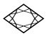
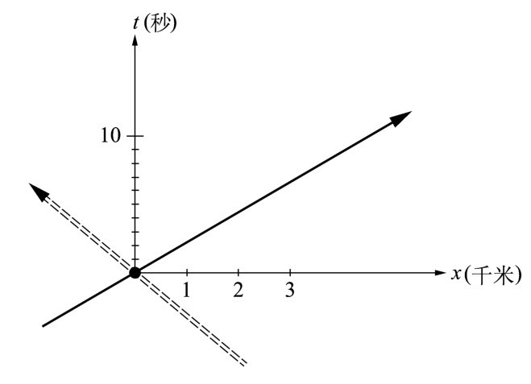
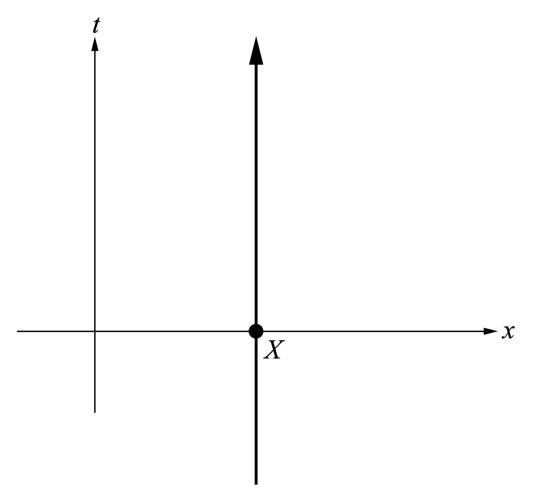
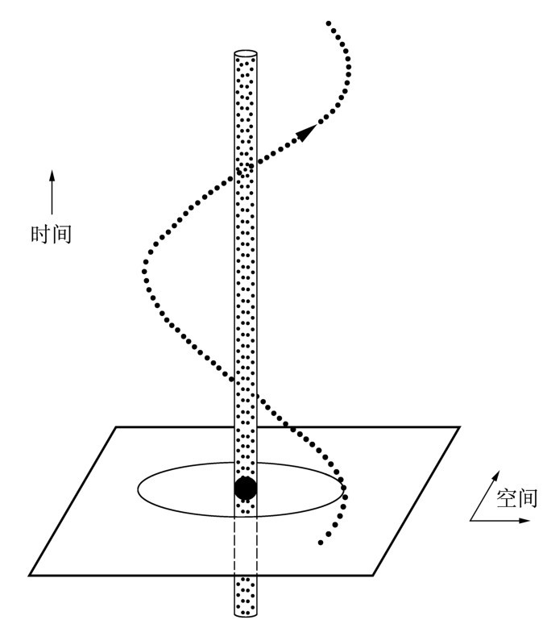
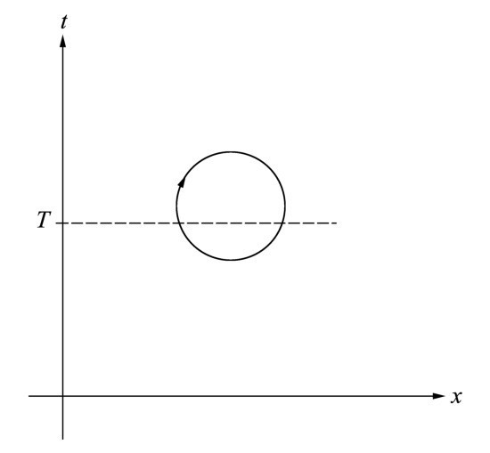
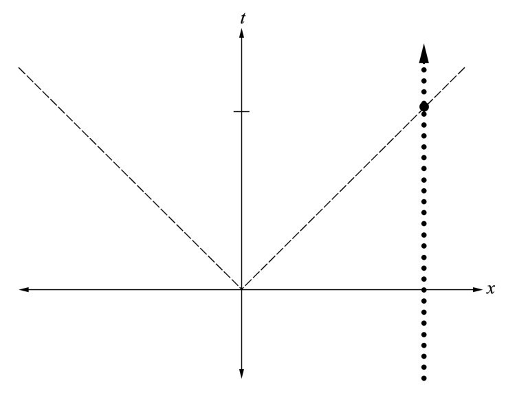
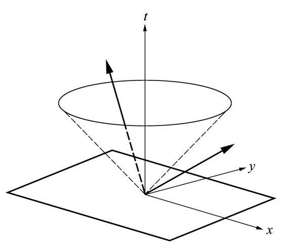
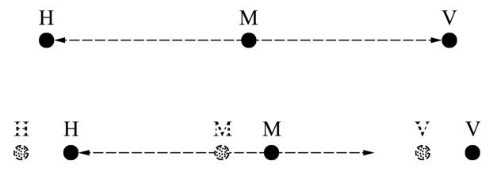

第七章午饭期间我们没再谈物理学；可是，从牛顿的脸上你就可以看出，他已经想出了关于光速的恒定性及其后果的所有类型的问题。而另一方面，爱因斯坦则是情绪高涨；他给我们讲了许多他在伯尔尼期间的故事来助兴。他总是不断地提到原来的奥林匹亚学会，其成员显然缺乏一个学会成员应有的威严和庄重。他还谈到他们一起对图恩湖和其他地方所做的许多游览。于是我提议，我们应该利用这么好的天气安排自己做一次类似的出游。爱因斯坦爽快地同意了，牛顿也不反对。
午饭后我们沿着阿尔贝格小巷穿过熊苑广场，步行回到爱因斯坦的寓所，然后开始我们下午的学术会议。我很难阻止牛顿用一连串问题和疑难对爱因斯坦进行连珠炮式的发问。爱因斯坦和我达成共识，认为我们首先应该让牛顿熟悉理解相对论所必需的许多概念和思想。爱因斯坦充当了讲师的角色。
爱因斯坦： 先生们，在正式讲相对论之前，我想先解释几个在其中起重要作用的概念。这些概念也可以在经典力学——艾萨克爵士，也就是你的力学——的框架中讨论。
让我们再次考虑空间和时间。如你们所知，在我们的宇宙中空间是3维的。那是我们从直接观察中推断出来的事实。数学上这意味着，空间可以用3维坐标系来描述。空间中的每一个点可以用3个数字即3个坐标来描述。我们不知道空间为什么是3维的，至少我不知道非这样不可的任何理由。抑或现代物理学是否已经有了答案？
爱因斯坦向我提出了这个问题，我也只好来回答。
哈勒尔： 还没有。就我们所了解的，空间可能会超过3维，而不会使物理学定律没有意义。但我敢肯定，总有一天会找到你的问题的完整答案。我们的世界以及空间的结构可能会由物理学基本定律的结构来决定，可是我们并不完全知道这些定律。我特意用了“可能”这个词，因为我们对此还没有把握。空间的3维特性可能或多或少是在大爆炸之后不久偶然演化而来的。实际上我自己也摆弄过那种想法，可我也提不出什么具体的答案。
爱因斯坦 （显然是消遣性地）：牛顿，你怎么看呢？我认为我们可以有把握地说，物理学家尚不知道空间为什么是3维的。看来还有些工作需要我们去做。我们认真一些吧。我们把空间是3维的这一点当作事实。而另一方面，时间则是一维的；它由一个数字唯一地确定。
牛顿 （插话）：在《原理》中我特意谈及了绝对空间和绝对时间。我曾想象我可以在空间任一点放一个时钟。我还可以假设，在某一特定时刻，所有时钟都显示相同的时间。这些时钟的总体就能描述一个统一的时间，在空间各处一齐滴答作响；我可以把这看作绝对时间。我们测量时间所用的单位当然是不相干的，不论是分钟、小时还是这些单位的任意分数都一样。
爱因斯坦 （打断牛顿）：够了，够了，牛顿！我们都知道你的绝对时间的思想。我想得到的是空间与时间的某种统一。让我们把时间看作一个新的、独立的坐标，大致相当于空间的3个坐标。
牛顿 （又插话进来）：请等一下，爱因斯坦先生。那到底意味着什么呢？你的意思不是要主张把时间作为空间的一部分吧？我必定会坚决反对。空间就是空间，时间就是时间。你不能把它们混为一谈。那就好像是把苹果和橙子混淆起来一样。
爱因斯坦： 这里要注意！没人说把空间和时间混淆起来，至少现在还没说。
牛顿 （有点生气地）：我希望我们能一直那样。
哈勒尔： 噢，艾萨克爵士，恐怕不久我们就不得不谈到那种混合了。
爱因斯坦 （冷静但却坚定地）：放心，放心，我亲爱的同行们！我并没建议时间坐标应该成为第四维空间坐标。我们只是除了3个空间坐标以外又引入了时间坐标。那不会使空间成为4维的。这只不过是定义了空间和时间的一种连续区，即我们所谓的时空。时空是一种（3+1）维结构，如此这般的原因仅在于我们不能简单地把3加上1变成4。
我想给出这种时空连续区的一个简单例子。假设我们描述的是沿空间坐标系的x 轴行进的宇宙飞船的运动。这种描述不是限定的；我们总可以通过变换或旋转做到这一点，因为我们知道宇宙飞船无论如何都是沿直线运动的。这里的优点是我们可以轻易地省略其他两个空间坐标y 和z 。这两个坐标沿着宇宙飞船的轨迹都是零，因此它们与某一特定时间对宇宙飞船的位置的描述无关。
牛顿： 你只是把问题变成一维的了。
爱因斯坦： 正是这样。你马上就会明白为什么这很有用。现在我们可以沿着轨迹，通过在x 轴上标记每个点并标记宇宙飞船经过时所对应的时间点来描述宇宙飞船的运动。换句话说，我们制作了一个像铁路时刻表一样的时刻表。

图7.1 2维时空连续区的几何表示，包括一条空间轴x （单位是千米）和一条时间轴t （单位是秒）。处于位置x =0及时间t =0的一艘宇宙飞船会沿着所示的黑粗直线运动。双虚线表示在相反方向的一个类似运动。
将时间作为一种特定坐标引入进来还有另一种方法。在这种方法中，我们需要一个非同寻常的坐标系，即把空间的x 轴与时间轴结合在一起。
爱因斯坦开始在一张纸上画出一个坐标。
爱因斯坦： 我给每一个空间点以一个对应的时间坐标，表示宇宙飞船通过点x 的时间，我现在要用这种方式来描述宇宙飞船的运动。结果在我们的2维坐标系，或者更准确地讲是（1+1）维坐标系中呈一条直线。用这种方法描述宇宙飞船的运动有一个明显的优点，即要找出在特定的时间宇宙飞船在何处，我们不必再去沿轨迹查找时间。我们不再需要宇宙飞船运动的时刻表；我们只要读出时空直线上每点的x 坐标和时间坐标即可。
牛顿： 真是个妙招。我必须承认，你的时空坐标系意味着空间与时间的一种有趣的综合。你的坐标系中的每一点现在不再代表空间的某一点，而是代表在特定的时间t 时的特定空间点x 。对我来讲，这是一种非同寻常的描述方法，可看来是合理的。
哈勒尔： 顺便说一句，对我们的坐标系中的这些点我们有一个专门的名称。我们称之为事件（event）。每一个点为一个事件。比如，牛顿1642年12月24日出生于伍尔斯索普这个事件就确定了这么一个点，即x 等于伍尔斯索普，t 等于1642。
牛顿 （微笑着）：那是个我几乎已经记不得的事件。可是，爱因斯坦先生，请你继续讲吧。我能看出来你迫不及待地要继续讲解你的时空。
爱因斯坦： 在时空中，宇宙飞船的路径是一条直线。它表示宇宙飞船经过空间各点时由时间确定的一连串事件。
在普通空间坐标系里，一个物体的位置只由它所在的地点决定。而另一方面，在时空系统中，物体定义了一条线，即物体所经过的一连串事件。一条这样的线或系列就是所谓的一条世界线（world line）。它包含了一个物体在过去、现在以及将来的运动的所有信息。
牛顿： 我猜想“线”这个名字是刻意挑选的。你的意思是说它不必是条直线？
爱因斯坦： 的确是这样。我们的宇宙飞船的世界线是一条直线，这是因为，根据牛顿的惯性定律，它是以恒定的速度在空间运动的。这条直线没有起点也没有终点。为简单起见，我们将假设，我们的宇宙飞船的运动没有开始也没有结束。当然对真正的宇宙飞船并不会是那样的，它必定是在某个时间建造的。
我还想提到另一种特殊情况。假设在特定的坐标系中宇宙飞船静止于点X 处。在这种情况下，世界线也是一条直线，可这条直线却与时间轴平行并在点X 处穿过空间轴。

图7.2 一个位于点X 处的静止物体的世界线看起来为平行于时间轴的一条直线。这里所示的又是只有一个空间轴；在3维空间，该点将会有3个坐标（通常称为x ，y ，z ）。
在空间做非匀速运动且不在一条直线上的物体的世界线显然不是一条直线。比如，以环行轨道绕地球运动的卫星的世界线是螺旋形的。
其他许多种曲线也可以作为世界线出现。在一张纸上难以描述它们，因为像卫星的运动一样，它们的运动可以出现在3维空间。为了完整地描述这些世界线，我们可能需要一张能画下4维的纸，3维画空间、1维画时间。当然，这是不可能的。即使是一个3维的模型也没法真正帮上忙，因为我们没有办法表示时间。而另一方面，要描述这种（3+1）维时空中的世界线，对数学家来说毫无问题。
哈勒尔： 我应该提一下，并不是所有可能的曲线都可以解释为物理实体在时空中的世界线。在普通的空间坐标系中，每一条可以想象得出的曲线都可能是某个物体的轨迹。而另一方面，在时空中，物体永远也不可能沿着诸如圆周这样闭合的世界线运动。

图7.3 在环形轨道上环绕地球运动的卫星的世界线，它是一条围绕着地球的笔直的世界线的螺旋线。注意，地球的绕日运动被忽略了。空间被表示成2维的平面，平面上呈现出了卫星的环形轨道。卫星的世界线在圆圈的一点穿过这个平面。
牛顿疑惑地看着我，思索了一会儿。
牛顿： 有道理。毕竟，那样一条世界线就表示一个物体在某一给定时刻可能通过两个不同的空间点。对同一个物体这当然不可能。我断定，时间保持不变时，只有在任何特定的时间点有且只有一组空间坐标的那些线才可以成为物理实体的世界线。
哈勒尔： 这可以说是一种理解方法，而且在数学上也是正确的。

图7.4 时空连续区中的一个圆圈是具有质量的物体不会有的世界线的一个例子。我们看到，在给定的时间，比如T ，虚线包含所有同时发生的事件，它会横穿这条世界线两次。这是不可能的，因为一个物体在同一时间不可能处在两个地点。
爱因斯坦 （又接过话茬）：我相信我们对时空已讨论得足够多了。大致说来，牛顿先生，对你而言已没什么新东西了，因为到目前为止我们的讨论严格基于你的力学。现在我想撇开这个话题，开始讨论光的问题。
爱因斯坦又拿起那张纸，在上面画了一个时空坐标系，只用x 轴来代表空间（见图7.5）。

图7.5 一个光信号从事件点t =0，x =0处发出，在t =1秒时到达距离300 000千米的观察者（如在时间轴上所示）。在事件点，光信号的世界线（虚线）与观察者的世界线（点线）相交。
爱因斯坦： 与其他任何点一样，这个时空坐标系的原点表示一个事件，一个空间和时间坐标均在零点的事件。现在，我们允许某些事情在这个事件点实际发生，比如说，我们让手电筒发射一个光信号。这个信号将以300 000千米每秒的光速传播。
下一步，假设在距原点某一特定距离的x 点处，例如x 等于300 000千米，安排一个观察者。他的工作就是寻找光信号。这个处于静止状态的观察者的世界线将是一条平行于时间轴的直线。
信号发出的一瞬间即时间t =0时，观察者什么也没有看到。只有当所发射的光子到达他所在的地点（x ）时，他才可以看到信号——在本例中，是在1秒（t =1）之后。
牛顿用手托着自己的头，专注地听着爱因斯坦的话。
爱因斯坦： 挨着观察者的世界线，我们可以画出光信号的世界线。由于我们眼下局限于讨论一维空间，所以光信号将从正向和负向沿x 轴传播。毕竟，只有前进和后退两个方向。沿正向轴运动的光子是在1秒以后到达观察者那儿。它们的世界线会与观察者的世界线交叉。光信号的世界线因此是一条直线，而且对于以光速离开原点的任何有质量的物体都是相同的。
牛顿 （正在思考爱因斯坦的草图）：如果真像你所说的那样，光总是以300 000千米每秒的速度运动，那么在时空中，光子的世界线在与时间轴成特定角的角度上总是一条直线。在你的草图中，你选择的单位正好使角度为45°。只有当你的时间单位是1秒，空间单位不是1米、也不是1英里（约1.6千米）或者1千米，而是光传播1秒所走的距离即300 000千米时才会是这样。
哈勒尔： 有道理。光在1秒内走过的距离称为1光秒（light second）。它对应的距离大约是从月球到地球这么远。对天文学家来说这是很小的单位，他们喜欢用光年（light year）思考。1光年就是光在1年中所走过的距离。爱因斯坦在他的草图中所选用的长度单位是1光秒。
爱因斯坦： 牛顿，你是对的；光在时空中的世界线的确是值得注意的。为简单起见，我假定光信号从我的时空坐标系的原点出发。光子沿着从原点向右和向左的两条世界线运动。
现在假定我们并不忽略所有其他的空间维度。我们再增加一维，比如可以用y 轴来描述。费一点劲，我甚至可以在纸上给出图示。
爱因斯坦开始画有2维空间坐标加上时间坐标的（2+1）维时空的草图（见图7.6）。

图7.6 在（2+1）维时空中的光锥（light cone）。两个箭头表示两个事件，一个在光锥里面，一个在光锥外面。
爱因斯坦： 我再次假设有人在时间t =0时从位置x =y =0处，即从时空坐标系的原点发射一个光信号。现在光可以在2维x-y 空间，即一个平面上，沿任意方向运动。它不再被限制在两种可能的方向上，而是可以在无限多个方向上运动。因此我们不能再说所发出的光是沿着一条世界线运动；而应该说光拥有整个事件平面。这个平面表现为顶点在我们的坐标系原点的一个圆锥体。
牛顿： 我发现这很有意思，这个光锥，如果我可以这么称它的话，它把整个时空分成了两部分。一部分是光锥外的事件，诸如在x-y 平面中在时间t =0的那些。另一部分是在光锥内部的事件。借助于对应着以小于光速的速度运动的物体的轨迹的世界线，这些内部事件点可以与原点相连。为了将原点与光锥外面的点连起来，我们需要以大于光速的速度运动的物体的世界线。
爱因斯坦： 祝贺你，牛顿！你这么快就成为时空专家了。你立刻也会成为相对论专家的。你对光锥的理解非常正确，光锥对时空结构的意义应归结为光速的普遍意义。而且，借助光锥将时空分为两个部分，这在物理学中具有最为重要的意义。可是现在讨论它还为时过早。我们现在只指出，只有在我们的（2+1）维时空的例子中，光锥才是一个真正的圆锥。在真正的（3+1）维时空中，我们必须处理包括从原点发出的光信号所能达到的所有事件的广义光锥。由于光可以沿所有3个空间方向运动，因此我没法在纸上画出广义光锥的结构。
牛顿： 爱因斯坦先生，我认为你给我的赞许真是太多了。到此为止，我们所讨论的东西没有什么是不能在我的《原理》中讨论的。唯一新的东西就是光速的不变性，或者更确切地说，所谓的光速不变性。我仍然没法相信，光以相同的速度运动，而与参考系无关。而且我相信，我能向你们二位证明这是不可能的。昨天晚上我有了个想法，而且我们今天所讲的关于时空的知识使得这个想法更加清晰。因此，先生们，我请你们注意。
爱因斯坦转向我微笑着。他给我的印象是他已经确切地知道牛顿想讲什么。
爱因斯坦： 我们非常好奇，艾萨克爵士。你的理由是什么？
牛顿： 准确地讲，我有两个理由。先说第一个。假设我们在空间某处观察宇宙飞船的运动。这艘宇宙飞船以300 000千米每秒的光速经过我们。我也认为，要把宇宙飞船加速到那个速度很困难，可我们在此不讨论技术问题，我们感兴趣的只是原理。
现在，让一个光信号从宇宙飞船上朝自身运动的方向发射出来。先生们，此处就有了我反对光速不变的理由。如果光速在每个系统中都是常量，那么在运动的宇宙飞船的静止系统中它也应该是不变的。因此光信号会以所谓的恒定光速飞离宇宙飞船。
然而，在我们自己静止的情况下观察这一切，我们会察觉什么呢？所发射的光信号和宇宙飞船都在空间以光速运动，即沿着平行的轨道以同样的速度运动。我们不得不得出这样的结论，即光信号不能离开宇宙飞船。可这又与我早些时候所讲的与宇宙飞船有关的话相矛盾。因此，这里就存在一个矛盾，必定是有什么东西错了。我认为错的是光速不变这个假设。
爱因斯坦 （清了清他的嗓子）：艾萨克爵士，在你所描述的情况下有矛盾，这点我同意。可是，我并不准备接受你的关于光速不变假设是错的这一结论。还有另外一种解决办法。
牛顿 （皱着眉）：还会有什么解决办法？你不会对我说，宇宙飞船不允许以光速在空间运动吧？
爱因斯坦 （目瞪口呆地）：你怎么会知道我正要讲的话呢？的确是这样的，宇宙飞船不可能以光速运动。
我的印象是，牛顿早就期待着爱因斯坦的回答。我的猜测很快就得到了证实。
牛顿： 我同意，从原则上讲，只有在可能将宇宙飞船或其他能发射光信号的物体加速到光速的情况下，我的理由才成立。如果宇宙飞船等不可能以光速运动，就不存在矛盾。
那么，爱因斯坦先生，如果我理解得不错的话，你是说不可能把一个物体加速到光速？
爱因斯坦： 正是如此。在相对论中，或者你也可以说，在自然界中，光速扮演了一个十分重要的角色。由于已经从实验上证明了在任何参考系中光速都是相同的，因此对于你所引入的佯谬（paradox）只能有一种解，即从原则上讲物体不可能以等于或大于光速的速度在空间运动。这绝对不可能发生。所有物体都以低于光速的速度运动。
牛顿看起来不太高兴。显然他不太喜欢爱因斯坦的回答。
牛顿： 你怎么能坚持说没有宇宙飞船能被加速到光速呢？我承认从技术上讲会很困难，可从原则上讲那是可能的。甚至不需要是一艘宇宙飞船。取一个非常小的物体，比如说，一个原子甚至是一个原子核，把它加速到很高的速度应该不太困难。你仍然声称没办法把这样一个粒子一直加速到光速甚至超过光速吗？在我的力学中，那样做当然不会有任何问题。
哈勒尔 （插话进来）：艾萨克爵士，根据你的力学可以做到这点，这没人怀疑。你可以轻松地在10秒内把一辆小汽车加速到100千米每小时。如果你每10秒重复一次这个过程，你就可以期待着，加速相当长时间后就可以真正达到光速。
可是现在我们知道，你不能一直重复这个加速过程。在高速，更准确地说，在速度达到光速的量级的情况下，现在已证明你的力学定律就不再成立了。它们必须用相对论的定律来取代。根据后者，继续加速诸如我们所讨论的小汽车这样的物体会变得越来越困难。它的速度越接近光速，用来提高其速度所需的能量就越多，即使仅提高很小量的速度也是如此。而且，你永远也不可能达到光速，这是因为这么做需要无穷多的能量。
爱因斯坦： 是这样的。我们还可以用另一种方式来说同样的事情。一个物体会需要无穷多的能量才能以光速运动。这就是为什么不存在这样的物体的原因，任何特定物体的能量都是有限的。
哈勒尔： 艾萨克爵士，让我给你举个例子吧。前不久我们在日内瓦降落时，我就指给你看欧洲核子研究中心的园区。CERN庞大的机器是用来加速氢原子的原子核即质子的。这些粒子带有一个正电荷，因此它们在一个几千米长的真空管中环绕时可以被强大的电磁场加速。如果无论质子运动的速度多快你的力学定律都保持有效的话，那么CERN的加速器就能把它们加速到超过光速。可是，并没有发生这种事。这些质子总是以低于光速的速度运动，尽管它们的速度比光速只差1％。
牛顿突然起身，在屋子里踱着方步。大家沉默了很长一段时间。
牛顿： 这太奇怪了。我从没想到过光速在自然界中扮演了这样一个重要的角色。可在此处光速是怎样发挥作用的呢？CERN的质子与光没有任何关系。它们对于使其无法超越的光速又知道些什么呢？光速似乎不仅是表示光在空间传播的速率。
爱因斯坦： 牛顿，你讲得完全正确。大致说来，从这个词的真正意义上讲，光速是一个恒定的自然常量。如我们此前所述，它对时空结构具有最重要的意义。你可以称之为普适的或者基本的速度。光以这个速度传播的事实只具有第二位的重要性。光速同看似与光没什么关系的每一事物都有关系，包括构成我们身体的原子。
哈勒尔 （转向牛顿）：很有可能，还存在其他粒子——中微子（neutrino），与光子即光的粒子一道总是以光速运动。这些粒子是电中性的，而且与电子有关，我们可以称之为电子的中性兄弟。它们产生于某种核反应。
牛顿： 为什么你说“可能”？你还不能肯定吗？
哈勒尔： 还不能肯定。我们还不知道中微子是像光子一样没有质量还是确实有些质量。 [1] 如果它们确实有质量，它们就不能以光速运动，只能比CERN的质子速度更快一点。不管怎么样，我试图在这里强调的是，“光速”是个有些模棱两可的术语，正如爱因斯坦早先暗示的那样。有人也可能选择说“中微子的速度”，这也会是片面的术语。毕竟，我们所涉及的是自然的基本常量，而且没有任何速度能超过这个常量的事实与光或者中微子都没有关系。它植根于时空的特别结构之中。
有一段短暂的沉默。我们抓不住论题了吗？接着爱因斯坦又说起来。
爱因斯坦： 牛顿，不久之前你提到反对光速不变的第二个理由。那是怎么回事？你想对我们隐瞒吗？
牛顿： 根本不是，我正要提到这个话题呢。可是我得承认，我不会忘记你所讲的有关光速的含义。现在我并不像1小时之前那么肯定我的第二个理由是合理的。这仍然是我的论点或者更确切地说是我的思想实验（thought experiment）。假设我们位于外层空间并观察经过我们的3艘宇宙飞船。这个船队应该以任意恒定的速度沿直线运动。假设这3艘飞船速度相等且小于光速，让中间这艘成为主控制的指挥船，前面的宇宙飞船与后面的都与中间指挥船的距离相等。
在某个给定时间指挥船发出一个信号。从与宇宙飞船等速运动的观察者，比如说指挥船上的一个乘客的立场，我们很容易来描述它。光信号离开指挥船，过了一会儿到达两艘护航船上。信号同时到达。让我强调一下：它们同时到达。

图7.7 3艘沿直线匀速运动的宇宙飞船M，V和H。假定M到V与M到H的距离相等。一个光信号同时从M向V和H方向发射。一个在M上旅行的观察者看到信号在相同时间到达V和H。另一个处于静止状态的观察者注意到，光信号在V没看到任何东西之前就到达了H。也就是说，同时发出的信号却没有在相同的时间到达点V和点H。
爱因斯坦微笑着转向我，同时眨着眼睛。我们两人都明白牛顿在使用“同时”这个词时的用意。
牛顿： 现在我们作为不与宇宙飞船一起运动的外部观察者来考虑上述情形。而且，这是关键之处。你坚持说在任何参考系中光速都是相同的，这就意味着，对宇宙飞船和我们自己的参考系这二者来说光速是相同的，都是300 000千米每秒。过一会儿，你们就会承认这是一个荒谬的主张。
从我们的观点看，光信号都以同样的恒定不变的速度在与宇宙飞船相同的方向上向前运动，而且也在与之相反的方向上向后运动。
现在，要到达宇宙飞船，光信号需要花些时间。在那段时间里，后面的船一直沿着与指挥船相同的轨道运动，因此光不需要走完这两艘船之间的所有距离就能到达后面的船。
现在考虑向前发射的光信号。光信号向前传播时，前面的船沿相同的方向运动。因此，光信号不得不比前一种情况多走一些路。
先生们，你们肯定已经注意到现在的情况已变得多么紧要：光信号会先到达后面的船，然后再到达前面的船。这样我们就处于一种完全荒唐的境地。在宇宙飞船的参考系中，两个光信号会同时到达，而在处于静止状态的观察者的参考系中却不然。
但时间却均匀地在流逝，与所有参考系都无关。在一个参考系中同时发生的两个事件在其他每个参考系中也会同时发生。我的结论是，爱因斯坦先生，你的光速不变性有问题。一旦你允许光速依赖于观察者的位置，问题就不复存在了。因此我的意见是，迈克耳孙—莫雷实验出了差错。
讲最后几个字时，牛顿跃身而起，在房间里大步穿行，目光直逼爱因斯坦。
爱因斯坦： 别紧张，牛顿！过来坐在这里。我们三人来分析一下你称为荒唐的这种情况。
我应该告诉你，很多年前还是我在专利局的那段时间里，当我构想出相对论的基础时，我也曾与那些想法较过劲。
你所说的是对的：光速不变原理与下面的假设是不相容的，即假设在一个参考系中——在我们的情况里就是在宇宙飞船的系统中——同时发生的两个事件在其他任何一个参考系中也同时发生。
可是，我不能同意你认为的迈克耳孙—莫雷实验是错误的这个结论。那个实验以及其他许多类似的实验的结果都非常清楚。正如我们先前说过的，光速确实是一个恒定的常量。它是个自然常量。一旦我们习惯了这个基本原理，其他问题就自然解决了。可是我得承认，在1905年我也是用了几周的时间才接受光速是个具有普遍意义的量的想法。因此，我们不得不假设在一个参考系中同时发生的两个事件在另一个参考系中却不会如此。换句话说，如果你从一个参考系移至另一个参考系，时间就改变了。
在你的这个具体例子中，这意味着在宇宙飞船的系统中有一个时间，在处于静止状态的观察者的系统中有另一个时间。这两个时间从一开始就不同。当然，这与你的力学相对立。你会说，时间以恒定的方式在流逝，与参考系无关。而另一方面，我却坚持认为，不存在普适的时间这种东西，却存在普适的光速。
牛顿： 爱因斯坦先生，你能肯定不存在其他解释吗？如果你所说的是真实的，它就会使时间和空间的结构彻底发生变革。今天早晨我们就此达成了一致，可当时我并没有这么当真。只是你对同时性（simultaneity）问题的回答现在又让我犹豫不定了。
哈勒尔： 艾萨克爵士，我可以向你保证不存在其他解释。我们必须抛弃事件的普遍同时性的观念。你意识到这意味着什么。我们要发展一种空间和时间的新概念，或者更确切地说时空概念。让我来解除你的担忧吧。由于光速非常大，只要所讨论的速度与光速相比很小，你假定的空间与时间结构的所有偏差都会非常小。
让我们假定宇宙飞船的速度每秒只有几千米，顺便说一句，对宇宙飞船来说，这种速度是有代表性的。对静止的观察者和运动的系统而言，两个光信号都会同时到达。信号传播时间的差别小得可以忽略。
你在《原理》中表述得如此之好并已很好地维持了两个多世纪的空间和时间的观念不会完全失效。只要所考虑的物理过程涉及的速度远小于光速，它们仍然完全能适用。事实上这涵盖了当今技术的所有现象。只有在那些所涉及的速度接近光速的现象中，我们才会注意到与你的时空结构有相当大的偏差。我们已经可以观察到许多那样的现象了，比如，在CERN隧道中的质子的运动。
牛顿专注地听着。他站起来说，他需要一些时间去思考，而且要休息一下。因此我们结束了讨论会；下午已过了大半，我们彼此道别。
分手之际，爱因斯坦对牛顿说：“我完全明白为什么你现在很难受，因为要你放弃你的时空概念。1905年那个时候我也有同样的烦恼。我一夜接一夜地沿着伯尔尼的街道长时间地散步，想安定我的情绪。我难以入睡。1905年那个时候我从没想到，若干年之后，伟大的牛顿也会有同样的问题。我真诚地希望你今晚愉快。明天见。”
牛顿谢过我们就快速朝他的旅馆方向走去了。我和爱因斯坦穿过老街区闲逛了一会儿，就在熊苑广场附近的一家意大利小餐馆坐下来吃晚饭。
注解：
[1] 近年来的太阳与大气中微子振荡实验结果表明，中微子确实存在极其微小的静止质量。——译者